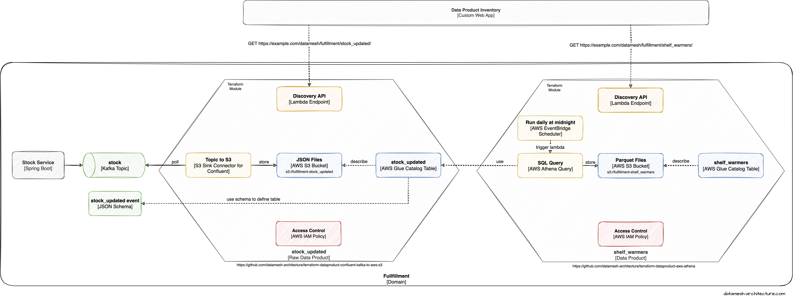

As stated in Tech Stacks / AWS S3 and AWS Athena, we often see Data Mesh implementations relying on AWS S3 and AWS Athena as the primary means to share and query data products.
What's still missing is an easy and reproducible way to provision the necessary services for data products and on the long run to create a Data Mesh out of these data products. Thus, the following guide will give a brief overview of our work related to Terraform and showcase how everyone can create data products on AWS.
Terraform Module "Confluent Kafka to AWS S3"
The module leverages Confluent Kafka Connect and AWS S3 to facilitate the transfer of data from Confluent Kafka to AWS S3.
The goal of this Terraform module is to enable users to easily transfer data from Confluent Kafka to AWS S3 for processing and analysis. The module achieves this by creating and configuring the necessary AWS resources, such as an S3 bucket and IAM roles, and deploying Confluent Kafka Connect to pull data from Kafka topics and write it to the S3 bucket.
To use this module, users must provide input parameters such as the name of the S3 bucket, the Kafka brokers and topics, and the credentials to access the resources. Once the module is deployed, it sets up a Kafka Connect cluster, configures the S3 sink connector, and creates the necessary IAM roles and policies to enable access to the S3 bucket.
Overall, this Terraform module provides a simple and efficient way to integrate data from Confluent Kafka to AWS S3, allowing users to easily collect and store data in a centralized location for further processing and analysis.
The module is open-source an can be found on GitHub.
Terraform Module "AWS Athena"
The goal of the Terraform module is to facilitate the creation and configuration of Amazon Athena resources for efficient querying of data stored in Amazon S3. This module provides an easy way to set up and manage the infrastructure required to run SQL queries on data in S3 using Athena.
The module achieves this by creating and configuring several AWS resources, including an S3 bucket, Athena database, table, and IAM roles. The S3 bucket is the location where the data to be queried is stored. Athena is the serverless query service that allows users to run SQL queries on the data stored in Amazon S3. IAM roles are a set of AWS Identity and Access Management roles that provide the necessary permissions to access the resources required by Athena.
To use this module, users must provide input parameters such as the name of the S3 bucket where the data is stored and the name of the Athena database and table to be created. Once the module is deployed, it provisions and configures the required AWS resources, including the S3 bucket, Athena database and table, and IAM roles, allowing users to run SQL queries on the data stored in S3 using Athena.
The module's simple and efficient approach to setting up and managing Amazon Athena resources for querying data stored in S3 makes it an essential tool for data analytics and insights. With this Terraform module, users can easily create and configure the necessary resources to start querying data using Athena, without having to worry about managing the underlying infrastructure.
The module is open-source an can be found on GitHub.

Example usage
A working example which shows both modules in action can be found in a separate GitHub repository.
Join us!
The current state does not have all features mentioned by Zhamak Dehghani in her book Data Mesh. Instead, it’s a starting point for a collaborative, open-source development based on real customer needs within the industry.